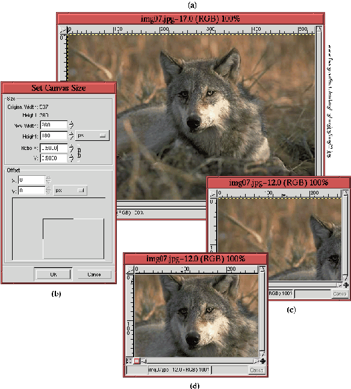
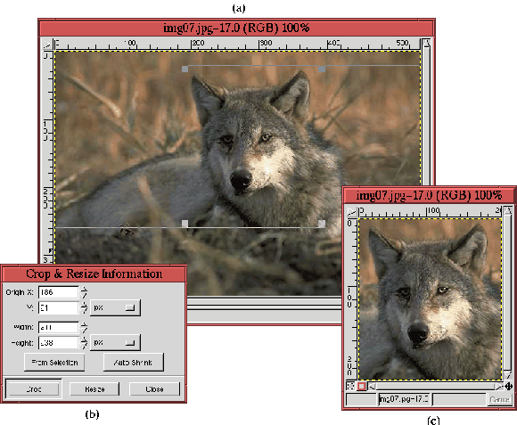
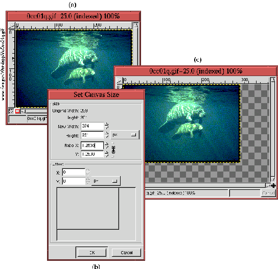

Next: 7.6.2.3
Масштабирование слоев Up: 7.6.2
Изменение размера и Previous: 7.6.2.1
Масштабирование
Next: 7.6.2.3
Масштабирование слоев Up: 7.6.2
Изменение размера и Previous: 7.6.2.1
Масштабирование
7.6.2.2 Изменение размера изображения
На первый взгляд, функция Размер холста, которая находится в меню окна
изображения Изображение->Размер холста должна работать так же, как
Масштабировать. Однако, существует огромная разница между изменением
размера изображения и его масштабированием. При изменении размера холста размер
содержимого изображения не меняется, поэтому возникает вопрос, как же
разместить его при новых размерах холста. Расположение рисунка зависит от
следующих параметров: высота, ширина и координаты Х и Y.
Figure: Изменение размеров изображения
от большего к меньшему
 |
Рисунок 7.16наглядно
показывает, какие проблмы могут возникнуть при использовании функции Размер
холста. На рисунке 7.16
(a) представлен изначальный размер изображения, на рисунке 7.16
(b) - диалоговое окно функции Размер холста. В диалоговом окне пропорции
Х и Y равны 50% от изначального размера. Полученный результат мы видим на
рисунке 7.16
(с). Как вы наверно уже заметили, оставшаяся часть рисунка расположена очень
неудачно. Это можно исправить при помощи инструмента Перемещение -
рис 7.16
(d). Но и сейчас объект изображения, голова волка, расположен не очень удачно.
Гораздо более удобно в подобных случаях использовать инструмент
Кадрировать. На рисунке 7.17
Figure: Применение инструмента
Кадрировать
 |
показан более удобный способ изменения размера изображения от большего к
меньшему. Инструмент Кадрировать находится на панели инструментов.
Переключившись на него, нажмите кнопку мыши в окне изображения и удерживая ее
переместите курсор. Появится прямоугольная рамка, которая и представляет собой
кадр. Размер созданной рамки можно изменить, нажав кнопку мыши на левом верхнем
или правом нижнем угле. Можно изменить и позицию рамки в окне, потянув за левый
нижний или правый верхний угол.
Результат использования инструмента Кадрировать показан на
рисунке 7.17
(a). При использовании этого инструмента появляется диалог, он изображен на
рисунке 7.17
(b). Чтобы начать преобразования после установки рамки, надо либо нажать на
кнопку Кадрирование в диалоге, или нажать кнопку мыши внутри рамки в окне
изображения. Размер изображения уменьшится, та часть изображения, которая
оказалась за границами рамки, будет удалена. Если в диалоге нажать на
кнопку Изменение размера, то часть изображения, оставшаяся за границей
рамки, сохранится.
На рисунке 7.17
(с) показан результат кадрирования по той рамке, которую мы создали на
рисунке 7.17
(a). Из всего вышесказанного должно быть понятно, что для уменьшения размера
изображения не надо пользоваться функцией Размер холста, гораздо проще
это сделать при помощи инструмента Кадрировать.
При том, что функция Размер холста не очень хорошо зарекомендовала
себя при уменьшении ``холста'', она практически незаменима при его
увеличении. Обычно необходимость в увеличении размера изображения
возникает при объединении рисунков. Вы создаете некоторое количество слоев и
вдруг обнаруживаете, что размер изначального изображения слишком мал. Вот эту
проблему стоит решать при помощи функции Размер холста. Рисунок 7.18
Figure: Изменение размеров изображения
от меньшего к большему
 |
иллюстрирует пример удачного применения этой функции.
На рисунке 7.18
(a) показано изначальное изображение, на рисунке 7.18
(b) - окно диалога функции. В этом случае пропорции Х и Y увеличены на 125%.
Полученный результат мы видим на рисунке 7.18
(с). После работы с функцией Размер холста расположение содержимого
изображения можно подкорректировать при помощи инструмента Перемещение.
Next: 7.6.2.3
Масштабирование слоев Up: 7.6.2
Изменение размера и Previous: 7.6.2.1
Масштабирование
Grigory Bakunov 2003-05-26